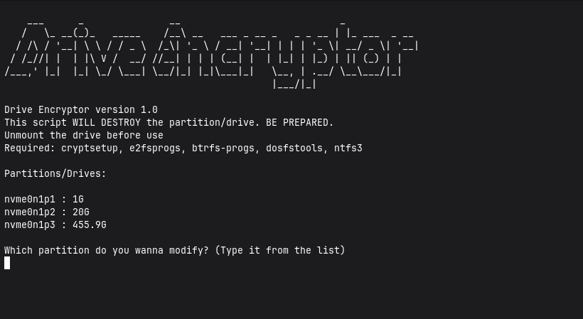

Use the following code to use it :
git clone https://github.com/JQx-999/Drive-Encryptor.git cd Drive-Encryptor/Encryptor && bash ./main
A bash script for automating the task of encrypting a drive with LUKS.

For Debian/Ubuntu:
sudo dnf install cryptsetup git e2fsprogs btrfs-progs dosfstools ntfs-3g fuse
For Fedora:
sudo dnf install cryptsetup git e2fsprogs btrfs-progs dosfstools ntfs-3g fuse
For Arch Linux:
sudo pacman -Sy cryptsetup git e2fsprogs btrfs-progs dosfstools ntfs-3g
Can only be used in Linux
git clone https://github.com/JQx-999/Drive-Encryptor.git cd Drive-Encryptor/Encryptor && bash ./main
Backup everything from the target drive that you wanna encrypt. This code is designed to destroy the drive/partition. It has no warranty. YOU ARE AT YOUR OWN RISK. Make sure to unmount the drive before use. The script uses cryptsetup to encrypt using LUKS. This only works on linux. You will need specific packages to format to specific file format. ext4: e2fsprogs, btrfs: btrfs-progs, fat32: dosfstools, ntfs: ntfs3. I recommend you using a safe 14 character password. But it's upto you cuz I myself use 4 digit password tbh. This code only automates the work. It is designed to make the drive accessible to everyone. You could change the permissions afterwards. I made this code for my personal convenience, you may choose to use it.
Install the required dependencies.
Then use the code provided above to use the script.
This script will first ask about the partition. Suppose I want to encrypt sda2. So I will type "sda2" and nothing else.
Then it will open the cryptsetup to encrypt the drive. Type "YES" as prompted.
Choose a STRONG password for your drive. It will ask again for the passoword to open the drive.
Choose the specific file format if prompted.
BACKUP the header file (Type Y to continue). Finished.
This project follows GPLv3 license. You can further read it on host website.